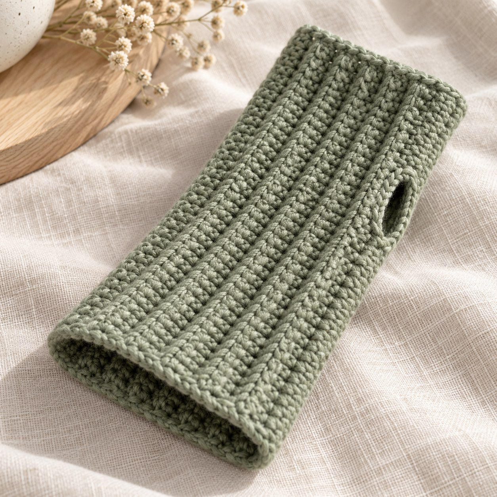
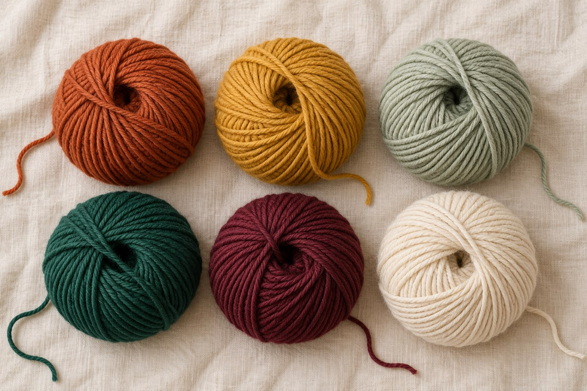
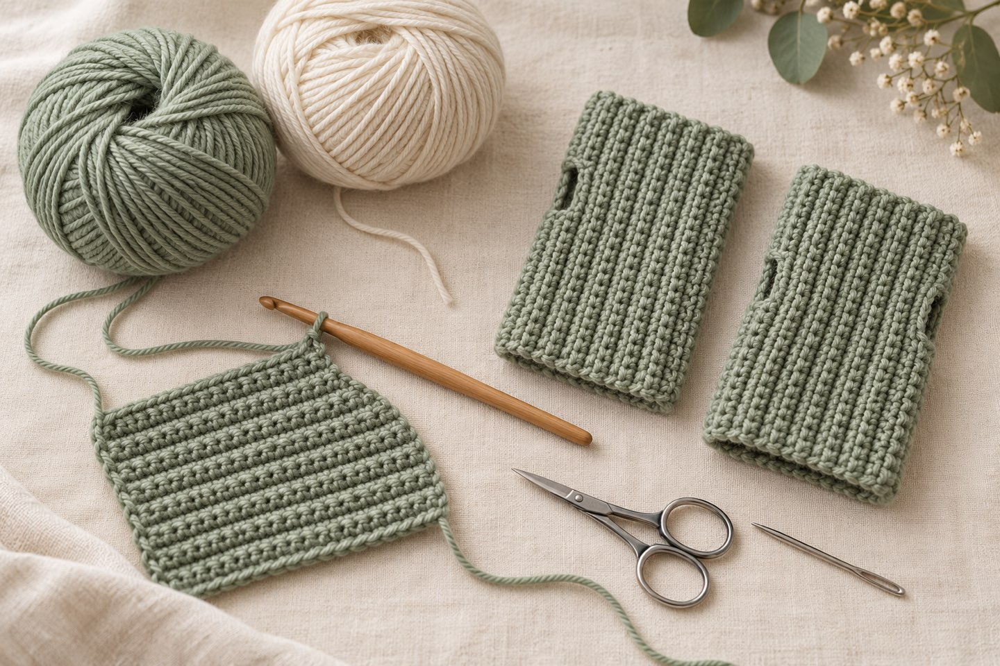
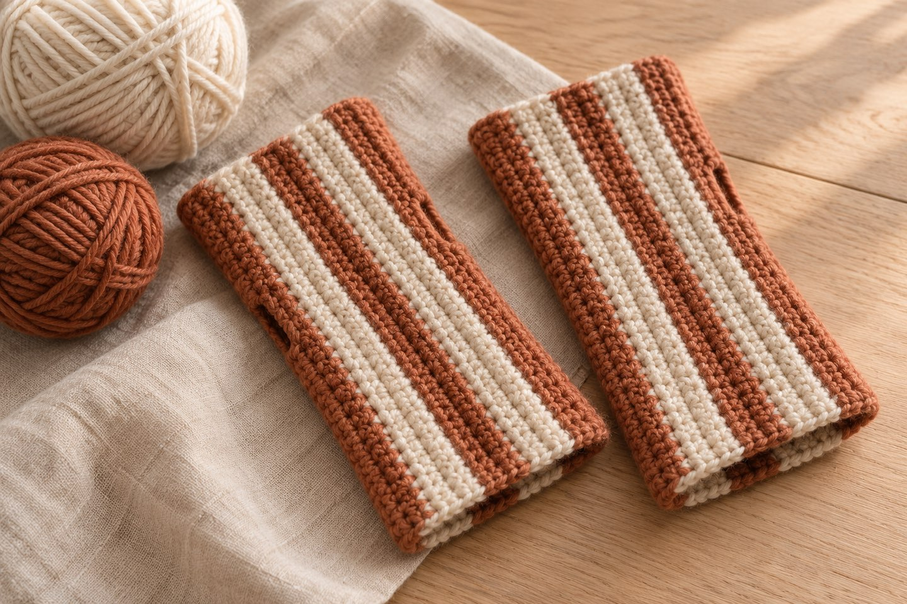

Stulpen häkeln: Anleitung für Anfängerinnen – Pulswärmer in 3 Größen

Kurz gesagt
Stulpen (Pulswärmer) sind ein ideales Herbstprojekt für Anfängerinnen: Du häkelst ein Rechteck aus festen Maschen im hinteren Maschenglied, nähst die Kanten zusammen und lässt ein Daumenloch offen. Du brauchst eine Nadel von 3,5–4 mm und als Richtwert ein Knäuel (50 g) mittelstarkes Garn pro Paar. Weiter unten findest du die kostenlose Anleitung mit Maschenzahlen für S, M und L.
Im Oktober sind die Hände morgens am Schreibtisch oder auf dem Fahrrad zuerst kalt, aber für Handschuhe ist es oft noch zu früh. Dafür sind Stulpen gemacht: Sie wärmen Handgelenk und Handrücken, lassen die Finger frei und sind in einem gemütlichen Abend gehäkelt. Hier findest du Ideen für Garn und Farben und eine Anleitung, die nur Luftmaschen und feste Maschen braucht.
1. Warum sind Stulpen ein gutes Herbstprojekt?

Stulpen sind klein, tragbar und verzeihen kleine Fehler. Sie passen in die Zeit, in der es kühl wird, aber noch kein Winter ist. Auch in internationalen Häkelblogs werden Boot Cuffs und Wärmer für den Herbst als schnelles Projekt empfohlen, das sich gut zum Schichten eignet (siehe Quellen).
- Schnell: Ein Paar ist, als Richtwert, in 2–3 Stunden gehäkelt.
- Wenig Garn: Ein Knäuel reicht meist, ideal für Reste und hübsche Einzelknäuel.
- Einfach: Du brauchst nur Luftmasche, feste Masche und Wenden – alles aus den Häkel-Basics.
- Als Geschenk geeignet: Ein Paar in der Wunschfarbe passt in jeden Briefumschlag.
2. Welches Garn passt zu Stulpen?
| Garn | Vorteil | Beachte |
|---|---|---|
| Wolle oder Wollmischung | Wärmt am besten, ist elastisch | Kann kratzen; Pflegehinweis der Banderole beachten |
| Baumwolle | Weich, luftig, gut für allergische Haut | Dehnt sich weniger, wärmt weniger |
| Acryl | Pflegeleicht und preiswert | Wärmt weniger gut, kann bei Hitze schwitzig sein |
Nimm für die Anleitung ein mittelstarkes Garn (oft als DK oder Sport bezeichnet) und eine Nadel von 3,5–4 mm. Auf der Banderole findest du eine Empfehlung, wie ich im Beitrag Welches Garn für Häkelanfänger? erkläre.
3. Welche Farben sind im Herbst 2026 angesagt?

Als Herbstfarben nennt der Strick- und Häkelzubehörhersteller KnitPro für 2026 unter anderem tiefes Rostrot, Ocker, Salbei, Smaragd, Burgunder und warme Neutraltöne, dazu handgefärbte Garne mit leichten Farbverläufen (siehe Quellen). Daraus habe ich diese Palette für Stulpen gemacht:
- Rost
- Ocker
- Salbei
- Smaragd
- Bordeaux
- Warmes Creme
Tipp: Wenn du nur ein Knäuel kaufst, nimm ein Garn mit sanftem Farbverlauf. Dann sehen die Stulpen auch ohne Muster lebendig aus. Achte darauf, beide Stulpen aus demselben Knäuel oder derselben Farbpartie zu häkeln.
4. Welche Größe brauchst du?
Miss dein Handgelenk mit einem Maßband. Die Stulpen sollen locker anliegen und sich ein wenig dehnen lassen. Die Maschen- und Reihenzahlen sind Richtwerte für ca. 18 Maschen und 20 Reihen auf 10 cm (feste Maschen im hinteren Maschenglied, Nadel 3,5–4 mm). Häkle zuerst eine Maschenprobe und rechne bei Abweichungen um.
| Größe | Handgelenk | Länge der Stulpe | Luftmaschen | Maschen je Reihe | Reihen |
|---|---|---|---|---|---|
| S | ca. 14–15 cm | ca. 12 cm | 23 | 22 | 30 |
| M | ca. 16–17 cm | ca. 14 cm | 27 | 26 | 34 |
| L | ca. 18–19 cm | ca. 17 cm | 31 | 30 | 38 |
Anleitung: Stulpen aus festen Maschen im hinteren Maschenglied

- Größe
- S, M oder L (siehe Tabelle)
- Zeit
- ca. 2–3 Stunden für ein Paar (Richtwert)
- Niveau
- Anfängerin
- Garn
- mittelstarkes Garn (DK/Sport), ca. 50 g pro Paar (Richtwert; für Größe L lieber 2 Knäuel bereithalten)
- Zubehör
- Häkelnadel 3,5–4 mm, Schere, Maßband, Vernähnadel
Abkürzungen
Lm = Luftmasche · fM = feste Masche · hMg = nur ins hintere Maschenglied einstechen. Alle Abkürzungen findest du in der Abkürzungs-Übersicht. Du häkelst in Reihen und wendest am Ende jeder Reihe. Du machst zwei gleiche Stulpen.
Stulpe (2×)
- Anschlag: S 23 / M 27 / L 31 Lm.
- Reihe 1: 1 fM in die 2. Lm ab Nadel, dann 1 fM in jede weitere Lm (S 22 / M 26 / L 30)
- Reihe 2: 1 Lm (zählt nicht als Masche), wenden. In jede Masche 1 fM in das hMg (S 22 / M 26 / L 30)
- Reihe 3 bis Reihe 30 (S) / 34 (M) / 38 (L): wie Reihe 2 häkeln (S 22 / M 26 / L 30)
Lege das Stück um dein Handgelenk. Die beiden kurzen Kanten sollen sich gerade berühren oder sich leicht dehnen lassen. Ist es zu locker, häkle ein paar Reihen weniger; ist es zu eng, ein paar mehr. Danach den Faden mit ca. 40 cm Rest abschneiden.
Zusammennähen und Daumenloch
- Falte das Rechteck zu einer Röhre, sodass die erste und die letzte Reihe aufeinandertreffen.
- Nähe beide Kanten Masche für Masche mit dem Restfaden zusammen (Matratzenstich oder kleine Überwendlingsstiche). Beginne am Handgelenkrand.
- Lass das Daumenloch offen: Größe S: 5 Maschen zunähen, 6 offen lassen, die restlichen 11 zunähen. Größe M: 6 – 6 – 14. Größe L: 7 – 7 – 16.
- Vernähe alle Fäden. Probiere die Stulpe an: Das Daumenloch sollte bequem sitzen, sonst eine Masche weiter öffnen.
- Die zweite Stulpe genauso häkeln und zusammennähen.
Wie kannst du die Stulpen abwandeln?

- Streifen: Wechsle alle 4 Reihen die Farbe, zum Beispiel Rost und Creme. Wechsle die Farbe am Reihenanfang und vernähe die Fäden an der Kante – die Kante wird ohnehin zugenäht.
- Länger: Für Armstulpen hängst du mehr Luftmaschen an den Anschlag (bei ca. 18 Maschen auf 10 cm etwa 2 Lm pro zusätzlichem Zentimeter) und lässt das Daumenloch weiter unten.
- Mit Muster: Statt festen Maschen kannst du später Stäbchen oder Noppen ausprobieren – für den Anfang bleibt das glatte Rippenmuster am einfachsten.
Wenn du bei den Reihen den Überblick behalten willst, hilft dir der Maschenzähler: Er zählt Reihen mit und merkt sich deinen Stand.
Noch mehr Herbstideen
Passend dazu: die Häkeltrends im Herbst 2026, die Häkel-Taschenanhänger und meine Kürbis-Anleitung. Wenn du das Häkeln erst lernst, starte mit dem Lernpfad.
Und du? In welcher Herbstfarbe häkelst du deine Stulpen? Zeig sie mir auf Instagram oder TikTok! 🧤
Häufige Fragen zu gehäkelten Stulpen
Was ist der Unterschied zwischen Stulpen und Pulswärmern?
Im Alltag werden beide Wörter oft gleich benutzt: gemeint sind gehäkelte oder gestrickte Röhren für Handgelenk und Handrücken, die die Finger frei lassen. Pulswärmer sind meist kürzer, Armstulpen reichen weiter den Arm hinauf.
Wie viel Garn brauche ich für ein Paar Stulpen?
Als Richtwert reicht für Größe S und M ein Knäuel mit etwa 50 g mittelstarkem Garn. Für Größe L oder längere Stulpen sind zwei Knäuel sicherer. Der genaue Verbrauch hängt von Garn und Handspannung ab.
Welche Häkelnadel nehme ich für Stulpen?
Für mittelstarkes Garn (DK oder Sport) passt eine Nadel von 3,5–4 mm. Richte dich nach der Banderole und häkle zuerst eine Maschenprobe.
Wie mache ich das Daumenloch?
Du nähst die Kanten der Röhre nicht ganz zu: Größe S: 5 Maschen zunähen, 6 offen lassen, 11 zunähen. Größe M: 6 – 6 – 14. Größe L: 7 – 7 – 16. Beginne am Handgelenkrand und probiere zwischendurch an.
Welche Farben sind im Herbst 2026 im Trend?
KnitPro nennt für den Herbst 2026 unter anderem Rostrot, Ocker, Salbei, Smaragd, Burgunder und warme Neutraltöne sowie handgefärbte Garne mit sanften Farbverläufen.